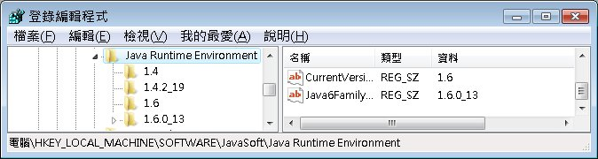
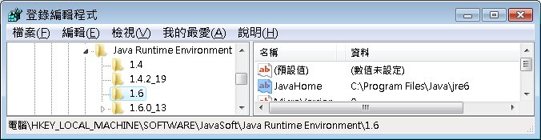
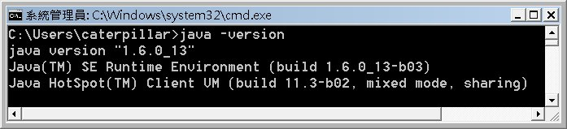
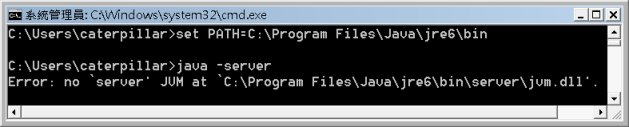

|
|
因為種種的原因，你的電腦中可能不只存在一套JRE！你可以試著搜尋電腦中的檔案，例如在Windows中搜尋java.exe，可能會發現到多個java.exe檔案，某些程度上，你可以將一個java.exe視作就是有一套JRE！ 就算你是乾乾淨淨的電腦，在安裝好JDK後，如果有選擇一併安裝Public JRE，則至少會有兩套JRE存在你的電腦中，一個是JDK本身附的Private JRE，一個是你所選擇安裝的Public JRE。 既然在電腦中有可能同時存在多套JRE，那麼你到底執行哪一套JRE？在安裝好JDK後，若還沒設定Path之前，所執行的是哪一套JRE？設定Path之後，所執行的又是哪一套JRE？ 當你在文字模式下鍵入java指令時，所執行的是哪個java執行檔呢？這個在 PATH 是什麼？中有了答案，也就是可以在PATH所指定路徑中，找到的第一個java可執行檔。問題在於，這個可執行檔所啟動的是哪套JRE？當找到java可執行檔並執行時，會依照以下的規則來尋找可用的JRE：
所以，當你安裝完JDK後尚未設定PATH，鍵入java指令，應該就是執行C:\Windows\System32中的java.exe，然而在System32下並沒有相關的.dll檔案，因此找尋上一層目錄，也沒有jre目錄，此時查看登錄檔：  目前登錄版本為1.6的JRE（你可以看到，我的電腦中還有裝1.4的JRE），查看1.6中的路徑：  所以最後所執行的是C:\Program Files\Java\jre6的JRE。 如果你設定了PATH，指向JDK的bin目錄，則執行java指令時，因為在JDK的bin中找不到相關的.dll檔案，因此找上一層目錄中的jre，於是找到的是JDK的Private JRE。 如果你將PATH設定指向C:\Program Files\Java\jre6\bin，則執行java指令時，因為同一目錄下可以找到相關的.dll檔案，於是就執行C:\Program Files\Java\jre6\這個JRE。 在執行java指令時，可以附帶一個-version引數，這可以顯示所執行的JRE版本，這是確認所執行JRE版本的一個方式。例如：  在剛接觸到一個新的開發環境時（例如到客戶那邊去時），先確認環境是很重要的一件事，若要確認JRE，則先檢查PATH路徑中的順序，再查看java -version的資訊都是基本的檢查動作。 那麼怎麼知道所執行的是JDK的Private JRE或另外安裝的Public JRE？這要先來認識一下JRE中有哪些東西，之前 什麼是 JRE？ 中談到，JRE包括了Java SE API與JVM。你可以查看JRE目錄中lib目錄，有個rt.jar，這就是封裝為JAR檔的Java SE API，JAR是個ZIP壓縮格式的檔案，可以用解壓縮軟體觀看當中的內容，確實是一堆.class所組成。另外，查看bin目錄中，如果是Public JRE，則會有個client資料夾，當中會有個jvm.dll，這個就是JVM。如果是JDK的Private JRE，則會發現，bin底下除了client資料夾外，還有個server資料夾，當中也有個jvm.dll。 預設安裝下，只有JDK附帶的JRE中的bin會有server資料夾，而Public JRE沒有。你在執行java時，無論是Private JRE或Public JRE，預設會執行的是client中的jvm.dll。執行java時，其實可以自行指定-client或-server引數，指定-client或不指定引數時，預設執行的就是client中的jvm.dll，指定-server時，就會找尋看看是否有server資料夾，並執行其中的jvm.dll。 所以，如果是Public JRE，嘗試執行java時指定-server，則會出現以下的錯誤：  （你也許會想，如果將Private JRE中的server資料夾複製至Public JRE中bin目錄下，是不是就可以執行成功呢？答案確實是如此！） 只 是個簡單的測試方式，真正還是要了解JRE的尋找順序。所以，如果有個需求是切換JRE（不使用IDE的情況），則設定PATH指向所想要的JRE之 bin目錄才是正確的作法之一，而不是設定Classpath（更不是設定Classpath指向所謂的rt.jar或甚至tools.jar，這是常有 的誤解）。 為什麼JDK自己還要附帶Private JRE呢？這不是多此一舉嗎？直接裝Public JRE不就好了？答案其實在於，JDK中多數工具程式，本身就是用Java寫的，執行時自然就得有JRE，為了防止你不知道要裝JRE，所以乾脆直接給你 一個Private JRE，下一篇文章還會詳細說明「JDK中多數工具程式，本身就是用Java寫的」這件事。 client與server的差別，簡單地說，例如你開一個桌面程式，會想早點看到畫面，你就會覺得這個程式執行效能很好，這可以看作是client的目的之一，client強調啟動速度，一開始不配置太大量的記憶體。server的話，則是會配置較大量的記憶體，因為伺服器不強制啟動速度，而強調有客戶請求時的回應速度，因此將基本需要的資源先載入記憶體，回應時就不用慢吞吞地進行載入再回應。 如果想知道兩者更細微的差別，則你應該記得這個網址的圖中，在下方JVM的圖示，就有分別介紹： |